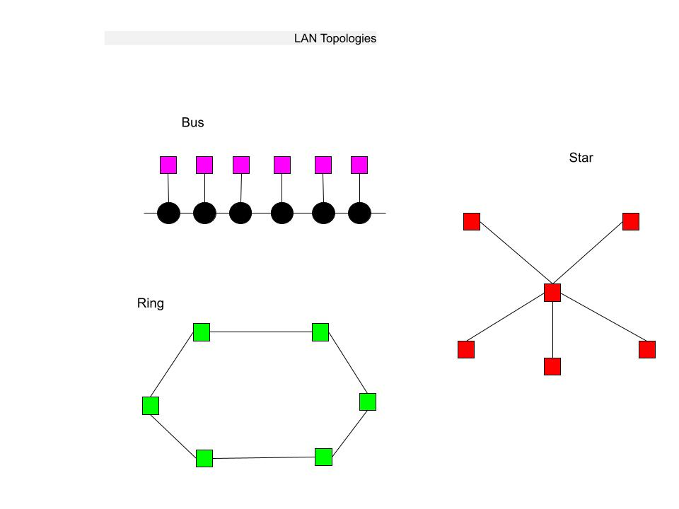

| Chapter 7: Computer Networks & Cloud Computing |
| Student Name: Carley Fisher |
| Briefly describe or define: |
- Computer Network:Is a set of independent computer systems interconnected by telecommunication links for the purpose of sharing information and resources.
- Analog Device: Analog devices are a combination of both analog machine and analog media that can together measure, record, reproduce,
receive or broadcast continuous information, for example, the almost infinite number of grades of transparency, voltage, resistance, rotation, or pressure.
Examples include televisions and monitors.
- Digital Device: An electronic device that can create, generate, send, share, communicate, receive, store, display, or process information,
and such electronic devices shall include, but not limited to, desktops, laptops, tablets, peripherals, servers, mobile telephones, smartphones.
- Modem:Modulates, or alters, a standard analog signal called a carrier wave so that it encodes binary information. The modem modifies the physical characteristics of the carrier wave,
such as amplitude or frequency, so that it is in one of two distinct states, one state representing zero and the other state representing one.
- Bandwidth: A range of frequencies within a given band, in particular that used for transmitting a signal.
- Ethernet:A system for connecting a number of computer systems to form a local area network, with protocols to control the passing of information and to avoid simultaneous transmission by two or more systems.
- WLAN:A wireless local area network (WLAN) is a wireless distribution method for two or more devices. WLANs use high-frequency radio waves and often include an access point to the Internet.
A WLAN allows users to move around the coverage area, often a home or small office, while maintaining a network connection.
- IEEE 802.11 Wireless Network Standard: Also known as Wi-fi. Wi-fi is used to connect a computer to the Internet when it is within range of a wireless base station, often advertised as a Wi-fi hotspot.
- MAN (Metropolitan Area Network):This is a wireless network whose scope is larger than the few 100 feet of a WLAN,
Typically a few blocks up to an entire city. Its purpose is to provide full Internet connectivity to all computers within a neighborhood or metropolitan area.
- Internet of Things:The interconnection via the internet of computing devices embedded in everyday objects, enabling them to send and receive data.
- LAN (Local Area Network):Connects hardware devices such as computers, printers, and storage devices that are all in revitively close proximity.
- Repeater:Is a device that simply amplifies and forwards a signal.
- Bridge:Is a “smarter” device that has knowledge about the nodes located on each separate network. It examines every message to see if it should be forwarded from one network to another.
- WAN (Wide Area Network): Connects devices that are not in close proximity but are across town, across the country, or across the ocean.
- Packet and Packet Switching:An information block with a fixed maximum size that is transmitted through the network as a single unit.
- ISP:An ISP is a business whose purpose is to provide access from a private network to the Internet or from an individual’s home computer to the Internet.
- Firewall:a part of a computer system or network which is designed to block unauthorized access while permitting outward communication.
- Protocol:Is a mutually agreed upon set of rules, conventions, and agreements for the efficient and orderly exchange of information.
- Cloud Computing:the practice of using a network of remote servers hosted on the internet to store, manage, and process data, rather than a local server or a personal computer.
- Net Neutrality:The idea, principle, or requirement that Internet service providers should or must treat all Internet data as the same regardless of its kind, source, or destination.
|
Briefly Describe the five layers of TCP/IP (the internet protocol hierarchy) |
- Computer Science: The study of Algorithms, including their formal mathematical properties, their hardware realization ,their linguistic realizations and their applications.
- Algorithm: A procedure for solving a mathematical problem in a finite number of steps that frequently involves repetition of an operation; broadly: a step by step method of accomplishing a task.
- Sequential operation: A Sequential instruction carries out a single well-defined task. When that task is finished, the algorithm moves on to the next operation. Sequential operations are usually expressed as simple declarative sentences.
- Conditional Operation: These are the "question-asking" instructions of an algorithm. They ask a question, and the next operation is then selected on the basis of the answer to that question.
- Iterative Operation: These are "looping" instructions of an algorithm. They tell us not to go on to the next instruction but, instead, to go back and repeat the execution of a previous black of instructions.
- Programmer: A person who writes computer programs.
- Integrated Circuit: An electronic circuit formed on a small piece of semiconducting material, performing the same function as a larger circuit made from discrete components.
|
Briefly Describe these Computer Generations: |
- Layer 1. Physical Layer: The physical layer protocols govern the exchange of binary digits across the physical communication channel, such as a fiber optic cable, copper wire, or wireless radio channel.
These protocols specify such things at such as how we know when a bit is present on the line, how much time the bit will remain on the line,
whether the bit is in the form of a digital or analog signal, the physical quantities used to represent a binary zero and a binary one, and the shape of the physical connector between the computer and transmission line.
- Layer 2. Data Link Layer: The data link layer is the protocol layer in a program that handles the moving of data into and out of a physical link in a network. Data bits are encoded, decoded and organized in the data link layer,
before they are transported as frames between two adjacent nodes on the same LAN or WAN. The data link layer also determines how devices recover from collisions that may occur when nodes attempt to send frames at the same time.
- Layer 3. Network Layer: The two critical responsibilities of the network layer are creating a universal addressing scheme for all network nodes and delivering messages between any two nodes in the network.
- Layer 4. Transport Layer: The two most important protocols in the Transport Layer are Transmission Control Protocol (TCP) and User Datagram Protocol (UDP). TCP provides reliable data delivery service with end-to-end error detection and correction.
UDP provides low-overhead, connectionless datagram delivery service.
- Layer 5. Application Layer: This layer is the abstraction layer, which handles the sharing protocols over the computer network with OSI and TCP/IP model. In internet protocol suite, the application layer contains communication protocols and
interface methods which used for the process to process communication over the network. Application layer contains several protocols namely Telnet, FTP, TFTP, SMTP, SNMP, DNS, and DHCP.
| List and briefly describe at leaste 3 netwrok services and benefits:: |
- Email: Email has been the single most popular application of networks for the last 35 years. Email is convenient, Email is fast a message, emails supports multimedia and email is a broadcast medium.
- Social Networks: The ability to share information with others and create group of people that share or like similar things. Share videos, images, online profiles ect.
- Resource Sharing: The ability to share physical resources such as a 3D printer or massive TB storage device, as well as logical resources, such a device such as software and data among multiple users.
- Is FORTRAN still being used today? If so, what for? It is still being used today for things such as in Doppler radar weather forecasts or atmospheric and oceanic studies, as well as simulating nanoparticles, genomes, DNA and atomic structures.
| IEEE: |
- What does the acronym, IEEE, stand for? Institute of Electrical and Electronics Engineers
- What is the mission and vision of IEEE? IEEE's core purpose is to foster technological innovation and excellence for the benefit of humanity. IEEE will be essential to the global technical community and to technical professionals everywhere, and be universally recognized for the contributions of technology and of technical professionals in improving global conditions.
- What are the benefits of IEEE membership? Gain Expertise and Open Career Doors. Membership grants you access to the largest library of electrical engineering, computer science, and electronics technical literature as well as the latest technology trends, industry news, and events.
Collaborate with IEEE colleagues and member groups, online or in person, to build a support group for your profession, industry, or project. IEEE members can take advantage of exclusive and
discounted pricing on insurance and a variety of products and services (where available) that can add up to substantial savings. Expand your personal network with colleagues who share your expertise and commitment.
Participate in your local IEEE Section or join IEEE Societies or affinity groups focused to your area of specialty or interest.
- What are the requirements for IEEE student membership, and how much does undergraduate membership cost annually for students from the USA? A Student/Graduate Student member must carry at least 50% of a normal full-time academic program as a registered undergraduate or graduate student in a regular course of study in IEEE designated fields.
The total cumulative period for a member to hold the Student member grade and/or the Graduate Student member grade is limited to eight years. The dues is $16 annually.
| LAN Topologies: |

| | | |
| |